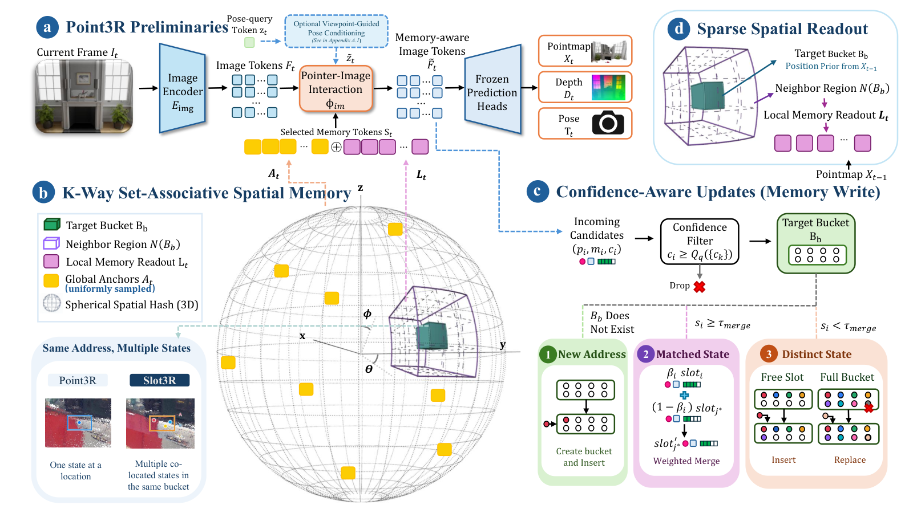

Problem Setup
01 · Why One Spatial Address May Need Several States
Point3R 把历史表示为带三维位置的 pointer。这里的 pointer 不是一个精确表面点的完整身份：其位置由图像 patch 内预测点聚合得到，特征也概括了区域内容。一个 patch 可以跨越前景、背景或遮挡边界，因此位置接近的两个 pointer 未必代表相同的观测状态。
若只根据位置接近就平均特征，互补信息可能在后续视图到来之前已经被不可逆地混合。Slot3R 将两个判断拆开：空间地址决定候选应该放在哪里，内容一致性决定它是否应该与已有状态合并。同桶多个槽位对应局部不同特征状态，不是带明确类别标签的对象实例。
输入仍为有序 RGB 序列；每帧先读取此前记忆，再预测相机位姿 T、深度 D 和点图 X，最后把当前证据写回。Point3R 权重不微调，也没有新增语言教师或语义监督。论文中的 feature agreement 指重建特征一致性，不能直接改称 CLIP 语义相似度。
Architecture
02 · Figure 2: The Read–Predict–Write Cycle

Xiyuan Zhang et al. · 2026 · Paper: CC BY 4.0 · Unmodified original figure · Paper & Caption ↗
原图 a 保留 Point3R 编码器、pointer–image interaction 和预测头。当前图像 token 与本帧选中的历史状态交互，输出几何和位姿；这些结果再变成位置、特征、置信度三元组，进入 c 的写入路径。因此本帧预测完成前，不能用它的最终点图决定第一次读取。
图 d 用上一帧点图中相同 patch 索引处的聚合位置作为当前读取的近似空间先验，检索对应桶及邻桶。这是基于相邻帧重叠的近似，没有进行精确光流对应；急转、快速平移或新区域出现时，先验可能偏离真实位置。
图 b 展示一个地址内的多个槽位。局部检索结果去重后，与从全记忆均匀采样的全局锚点一起送入 a。全局锚点提供非局部上下文，局部状态提供附近几何证据。图中虚线 pose conditioning 是可选变体，核心结果应先看不含该附加模块的 Ours (Core)。
Representation
03 · Addressing and Capacity
地址采用方位角 θ、仰角 φ 和对数半径 r 的离散网格。默认三个方向的 bin 数为 16、8、32，半径范围为 0.05 到 50；索引超界时裁剪到有效范围。相比等边长笛卡尔体素，对数半径的分桶尺度随距离变化，因此地址量化本身也会影响哪些证据被分到一起。
每个桶最多 K=8 个槽位，各保存位置 p、特征 m、置信度 c。一个桶中的不同槽位可以对应不同表面、视角或可见性状态，但论文没有给每个槽位附上可解释的对象名称。不要把“多个槽位”直接等同于对象分割。
需要分清三种容量：单桶 K、实际占用桶数，以及解码器读取预算 K_read。所用有限网格在数学上给出了最多 16×8×32×8=32,768 个核心槽位的地址上界，这是从配置推得的上界，不是论文测得的常驻条目数。实际已分配状态随覆盖增加；图像缓存、预测输出、可选 viewpoint bank 也不由 640-token 读取预算限制。
θ = atan2(y,x) φ = atan2(z,√(x²+y²)) r = log(max(‖p‖₂,ρ_min)) b = Concat(bin(θ),bin(φ),bin(r)) slot = (position p, feature m, confidence c)
Memory Update
04 · Confidence Determines Admission; Features Determine Fusion
候选置信度由对应 patch 的预测置信度平均得到。先按帧内分位数去掉最低的一部分候选，默认 q=0.25。它是相对筛选：即使整帧质量较差，仍可能有候选超过该分位阈值，因此不能把保留下来的条目都视为绝对可靠。
对已有桶，找到特征最相似槽位 j*，同时找到置信度最低槽位。若最大余弦相似度至少为 0.90，且新候选置信度不低于 j*，则融合；相似但更不可靠的候选会被拒绝。若不相似，候选也必须不低于桶内最低置信度，才可占用空槽或替换最弱槽位。新桶则直接接收经过帧级筛选的候选。
融合系数 β=c_new/(c_new+c_old+ε)，同一系数更新位置、特征和置信度。例如仅用于理解，c_new=0.8、c_old=0.4 时 β 约为 2/3，新证据占较大权重。这不是概率贝叶斯融合；网络置信度是否跨时刻校准，会影响这条规则的行为。
附录的批处理细节很重要：同一帧所有候选先对同一个更新前快照比较。多个候选命中同槽时，先聚合候选，再只融合一次；已经满的桶每帧最多执行一次替换，多余冲突候选被丢弃。它不是按输入顺序不断覆盖，更不是对整帧候选进行全局最优组合选择。
β = c_new / (c_new + c_old + ε) p ← (1−β)p_old + βp_new m ← (1−β)m_old + βm_new c ← (1−β)c_old + βc_new
Readout
05 · Sparse Access and Optional Pose Conditioning
默认邻域半径 d=1，在三个离散地址维度分别扩展一格，取有效且已占用桶中的状态。不同 patch 检索到同一槽位时会去重。最终序列先放最多 128 个均匀采样全局锚点，再放局部候选，去重后截断到 640。因此局部结果过多时，并非所有近邻都进入解码器，也没有额外学习式相关性排序。
固定读取预算约束记忆参与 attention 的规模，而不是把整个系统复杂度都变为常数。表 5 将上一帧先验换成额外一次当前帧初步预测，Acc 同为 0.039，FPS 却由 19.28 降至 12.29。这支持在所测九段 200 帧 NeuralRGBD 数据上使用较便宜的先验，不证明它在任意剧烈运动下都最优。
可选 VPC 另外维护带观察方向的 bank。空间先验选出附近条目，pose query 与其特征的余弦相似度经 softmax 汇聚上下文，再通过一致性门控注入 pose token。VPC-M 还使用近期旋转运动变化调节权重，VPC-A 只用一致性门控。二者仍是单次共享解码，不是再运行一个完整预测网络；但这个附加 bank 的开销应计入系统预算。
Evaluation
06 · Reconstruction, Depth, and Pose Evidence
主点云表使用每隔一帧采样的 k=2 协议，序列长为 300、400、500 个采样帧。Acc 衡量预测表面到参考表面的偏差，Comp 衡量参考表面的覆盖误差，二者越低越好；NC 衡量法向一致性，越高越好。这里的 accuracy 是距离误差，不是分类正确率。
500 帧时，7Scenes 上 Point3R 的 Acc 为 0.0745，Core 为 0.0275；NeuralRGBD 分别为 0.2106 和 0.0589。后者相对降低约 72%，但 RetrieveVGGT 同一表中的 Acc 为 0.0370，更低；Core 的 Comp 为 0.0236，优于其 0.0397。不同方法可能在表面精度与覆盖率之间取舍，不能压成一句全面领先。
深度结果区分序列尺度平移对齐与直接米制评测。Core 在三个数据集的对齐后 AbsRel 都低于 Point3R；但米制 Bonn 从 0.081 变为 0.087，KITTI 从 0.169 变为 0.179，反而更差。这说明相对几何一致性改善并不自动解决绝对尺度校准。
位姿表经过 Sim(3) 对齐，允许全局旋转、平移和尺度变换。Core 的 ATE 在三组数据上都改善，但旋转 RPE 并非都改善；VPC-A 对 Sintel 的 ATE 从 Point3R 的 0.4360 降至 0.2539，仍高于 CUT3R 的 0.2020。评估贡献应区分核心重建记忆与附加 pose 条件模块。
| 500 Sampled Frames | Acc ↓ | Comp ↓ | NC ↑ |
|---|---|---|---|
| 7Scenes · Point3R | 0.0745 | 0.0265 | 0.5510 |
| 7Scenes · Slot3R Core | 0.0275 | 0.0158 | 0.5790 |
| NeuralRGBD · Point3R | 0.2106 | 0.0706 | 0.6025 |
| NeuralRGBD · Slot3R Core | 0.0589 | 0.0236 | 0.6728 |
| NeuralRGBD · RetrieveVGGT | 0.0370 | 0.0397 | 0.5132 |
Controlled Comparisons
07 · What the Ablations Actually Isolate
表 4 在九条 200 帧 NeuralRGBD 序列上逐步加入组件。多槽位记忆将 Acc 从 0.086 降至 0.044，但平均结束 token 数从 836.0 增至 1,165.2，速度下降。它先用更多状态换取质量；随后稀疏读取恢复速度，过滤与全局锚点的组合再降低存储量。不能把最后一行的全部收益归于单独某个组件。
单桶容量消融也不是越大越好。k=2、200 帧的 7Scenes 中，K=1 的 Acc 为 0.089329，甚至差于 Point3R 的 0.047003；K=2 后降为 0.029775。到 K=8 和 K=16，Acc 分别为 0.026758 和 0.026092，但末端 token 数由 754.3 增至 1,235.2。这个对照支持局部多状态的重要性，也显示容量收益会饱和。
运行时还统一了 fused RoPE3D。附录控制实验中，只把 Point3R 的位置编码实现换成 fused kernel，就能把 FPS 从 4.547 提高到 14.750，而几何结果基本不变。因此不能把这种实现加速算作新的记忆机制贡献；稀疏读取的速度差应该在相同 kernel 下比较。
| NeuralRGBD · 200 Frames | Acc ↓ | FPS ↑ | Final Tokens |
|---|---|---|---|
| Point3R | 0.086 | 17.943 | 836.0 |
| + K-way Memory | 0.044 | 16.346 | 1165.2 |
| + Sparse Local Readout | 0.042 | 19.411 | 1162.3 |
| + Filtering and Anchors | 0.039 | 19.283 | 694.2 |
Personal Analysis
08 · Streaming Boundaries and Semantic-Memory Connections
方法定义中的解码和 memory 更新是因果的：不读取未来状态。但论文明确写出评测程序先编码整段输入，再递归解码；FPS 排除了数据加载和指标计算。因此“完成 1,000 帧”是该程序与单张 RTX 4090 24 GB 条件下的结果，不等于验证了从相机到地图的持续在线延迟。600–1,000 帧压力测试还使用 k=1，不能与主表 k=2 的长度曲线直接拼接。
NeuralRGBD 长序列 Core 平均约 18.91 FPS，1,000 帧峰值显存约 20.01 GB；Point3R 和 InfiniteVGGT 在 800 帧及以上失败。这支持读取约束的实际价值，但显存数字也说明 640 个历史 token 不是全部运行时内存。
与 Ray-Aware Memory 对照，Slot3R 把“是否共处一地”与“是否同一状态”分开，而不是依靠观察方向执行保留或替换。与 TrackGraph 对照，这里保留的是重建隐特征，不是语言对齐的实例图库。个人认为它给语义 memory 提出一个具体问题：语义能否帮助判断应保留的状态差异，同时不抹平几何上重要但语义相近的表面？这需要固定存储量、读取量和骨干后另做实验，本文没有验证。
官方仓库提供 Core、VPC-M、VPC-A 与 Point3R 的运行入口，使用同一 Point3R checkpoint。本笔记核对了论文与官方说明，未在本地复现实验；上面的数值均为作者报告。
Discussion
Reading Questions
Is a slot an object instance?
不是。槽位保存同一空间桶内的特征状态，没有实例标签或语言描述；它可以编码表面、视角或遮挡差异。
Does 640 tokens mean constant total memory?
不意味着。640 限制解码器读取；存储桶、序列编码缓存、预测结果以及可选 bank 需要另计。有限哈希范围也不是全系统固定字节预算的实测证明。
Why not always obtain the current-frame geometry first?
那通常需要额外预测。表 5 的当前帧先验与前帧先验 Acc 相同，但 FPS 从 19.28 降到 12.29；所测配置下额外计算没有带来对应收益。
Where could semantics add something new?
它可能提供不同于几何位置和重建特征的关联证据，但需验证语义如何改变保留或融合决策。仅把语义向量附在槽位上，不足以证明更好的 memory。
References
- Paper · arXiv:2610.12282v1 ↗
- Submission History ↗
- Official Project ↗
- Official Implementation ↗
- Paper License · CC BY 4.0 ↗
Original paper figures are attributed at each caption. The papers are distributed under CC BY 4.0; underlying third-party imagery retains its original rights. Explanations and analysis are personal reading notes, not author statements.
Verified on 2026-10-14. Paper results refer to the linked versions. Repository references were checked on this date.